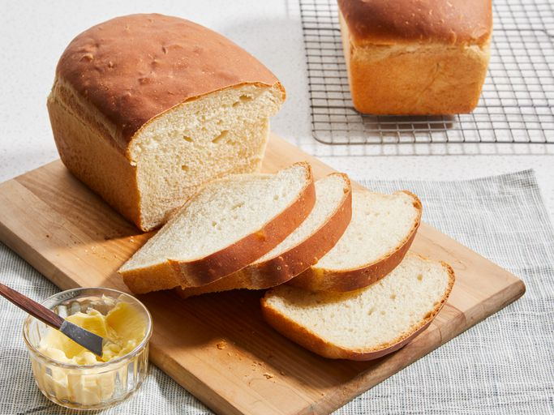

White Bread Recipes

Description
White bread typically refers to breads made from wheat flour from which the bran and the germ layers have been removed from the whole wheatberry as part of the flour grinding or milling process, producing a light-colored flour.
This bread machine recipe is easy and foolproof. It makes a very soft and tasty loaf of bread with a flaky crust.
Ingredients
- 1 cup warm water (110 degrees F/45 degrees C)
- 2 tablespoons white sugar
- 1 (.25 ounce) package bread machine yeast
- ¼ cup vegetable oil
- 3 cups bread flour
- 1 teaspoon salt
Steps
- Place water, sugar, and yeast in the pan of the bread machine. Let yeast dissolve and foam for 10 minutes. Add oil, flour, and salt to the yeast. Select Basic or White Bread setting, and press Start.
- Remove loaf from the machine after the cycle is done; cool in the pan for 5 minutes before turning it out onto a rack to cool completely.